New to setting up a desk? Start here
Desk & chair height calculator
Enter your height to estimate your seat height, sitting and standing desk height, and where the top of your monitor should sit.
Buying guides
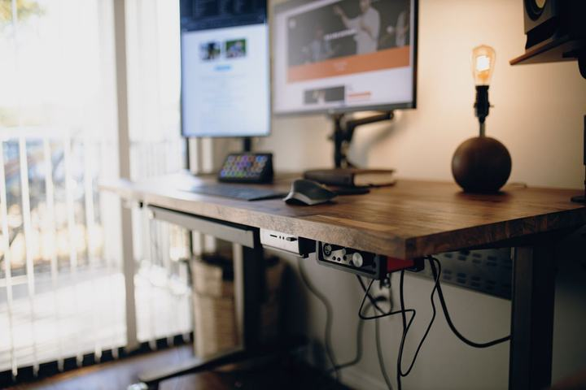
Best Electric Standing Desks (2026): Height Range, Load & Warranty Compared
Three electric standing desks compared on verified height range, load capacity, motors and warranty, plus which desk actually fits your height, sitting and standing.
FlexiSpot E6 Bamboo, Vari Classic Electric Standing Desk 60x30, FlexiSpot EN1
Read the guide →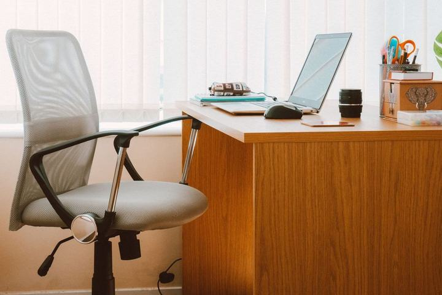
Best Ergonomic Office Chairs Under $500 (2026): Seat Height, Fit & Warranty Compared
Three ergonomic office chairs sold on Amazon US, compared on verified seat height range, load rating and warranty, plus which chair fits your height without a footrest.
Branch Ergonomic Chair, Steelcase Series 1, SIHOO M18
Read the guide →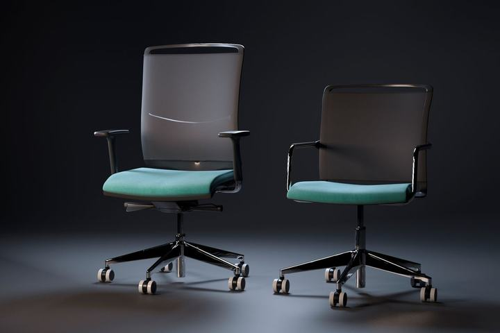
Herman Miller Aeron vs. Steelcase Leap V2 (2026): Which Should You Buy?
Aeron or Leap V2? A plain-English comparison of fit, materials, adjustments and warranty to help you choose between the two best-known office chairs.
Steelcase Leap V2, Herman Miller Aeron (Size B)
Read the guide →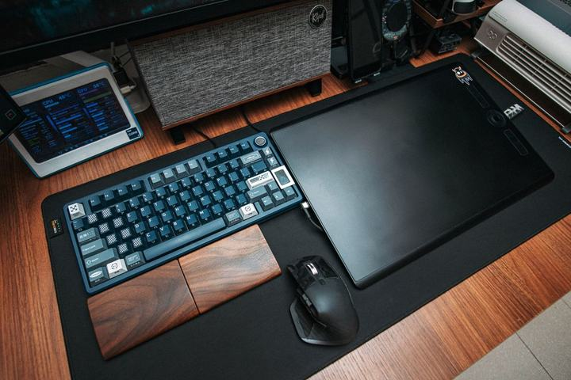
Best Footrests & Keyboard Trays (2026): Fix a Desk That's Too High
Most fixed desks are 29–30 inches tall, which is too high for most people under about 6 ft. See how tall a footrest you need for your height, and the footrests and keyboard trays that fix it.
Mount-It! Foot Rest with Foot Pedal Height, ComfiLife Foot Rest, StrongTek Wooden Rocking Foot Rest, Fellowes Office Suites Underdesk Keyboard Drawer, VIVO Clamp-on Keyboard and Mouse Tray
Read the guide →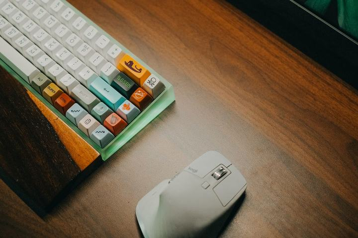
Best Ergonomic Vertical Mice (2026): Pick by Hand Size
Five ergonomic and vertical mice compared by hand size, grip angle and connectivity, including left-handed options.
Logitech Lift Vertical, Logitech MX Master 3S, Logitech MX Vertical, Evoluent VerticalMouse 4, Anker Wireless Vertical Mouse
Read the guide →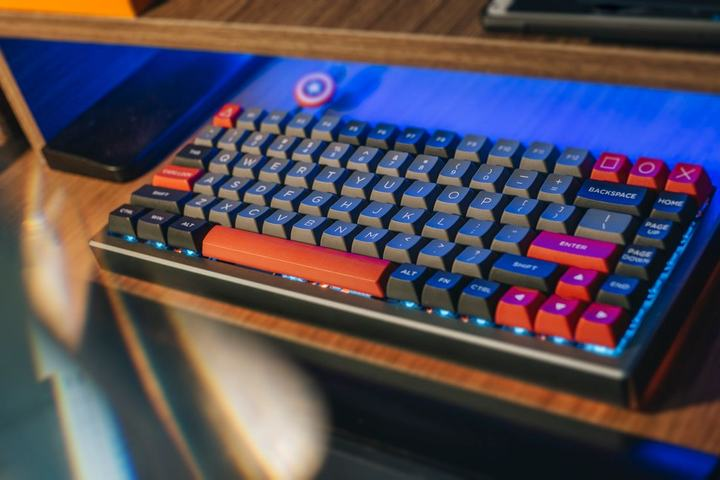
Best Keyboards for Coders & Writers (2026): Mechanical, Low-Profile & Split
Four keyboards for long typing days, from a gasket-mount mechanical to a split ergonomic board, and how to choose a layout that fits your posture.
Keychron Q1 Pro, NuPhy Air75 V2, Kinesis Freestyle Pro, Logitech MX Mechanical
Read the guide →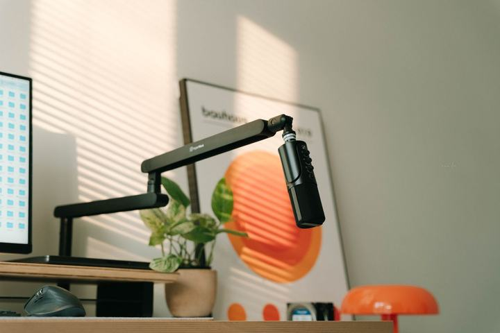
Best USB/XLR Dynamic Microphones for Podcasting & Zoom (2026)
Four dynamic microphones that work over USB today and XLR later, and why dynamic mics suit untreated home offices.
Shure MV7+, Rode PodMic USB, Audio-Technica ATR2100x-USB, Samson Q2U
Read the guide →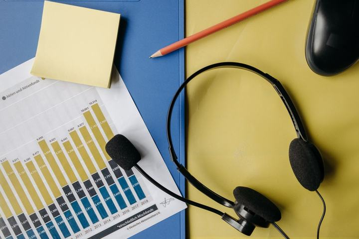
Best Noise-Cancelling Headphones for Deep Work (2026)
Four noise-cancelling headphones for focus and calls, compared on comfort, battery life, ecosystem and call quality.
Sony WH-1000XM5, Bose QuietComfort Ultra Headphones, Sennheiser Momentum 4 Wireless, Apple AirPods Max (USB-C)
Read the guide →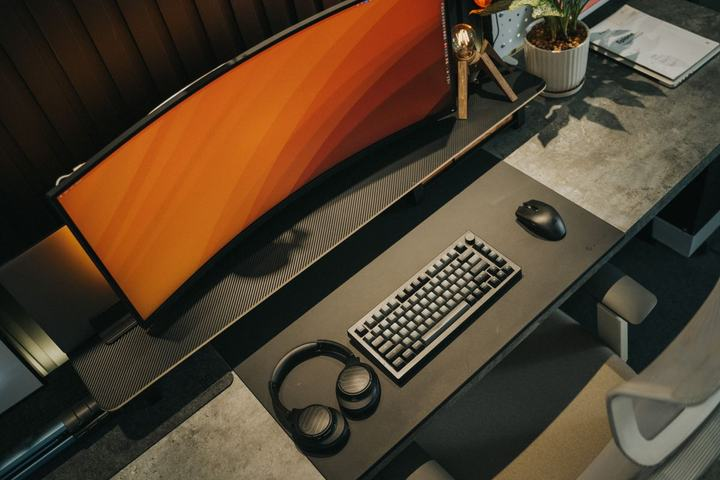
Best 49-Inch Super-Ultrawide Monitors for Productivity (2026)
Four 49-inch 32:9 monitors for coding, spreadsheets and multitasking, compared on panel type, USB-C docking and text clarity.
Dell UltraSharp U4924DW, Samsung Odyssey OLED G9, LG 49WQ95C-W, Philips 499P9H
Read the guide →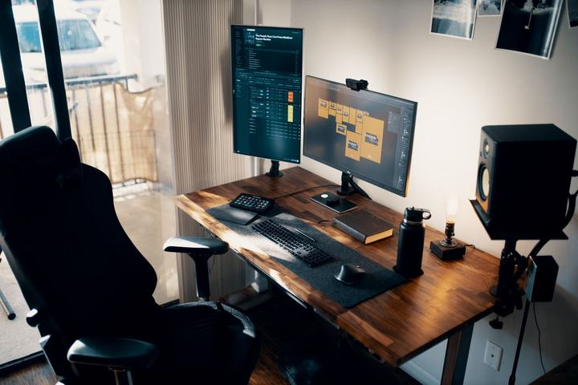
Best Monitor Arms (2026): Weight Range, Screen Size & Warranty Compared
Five monitor arms sold on Amazon US, from a $37 gas-spring arm to a heavy-duty mount for 49-inch ultrawides, compared on verified weight range, screen size, VESA fit and warranty.
Ergotron LX Desk Mount, HUANUO FlowLift Single Monitor Arm, HUANUO FlowLift Dual Monitor Stand, Ergotron HX Desk Mount, VIVO Dual Monitor Desk Mount (STAND-V002)
Read the guide →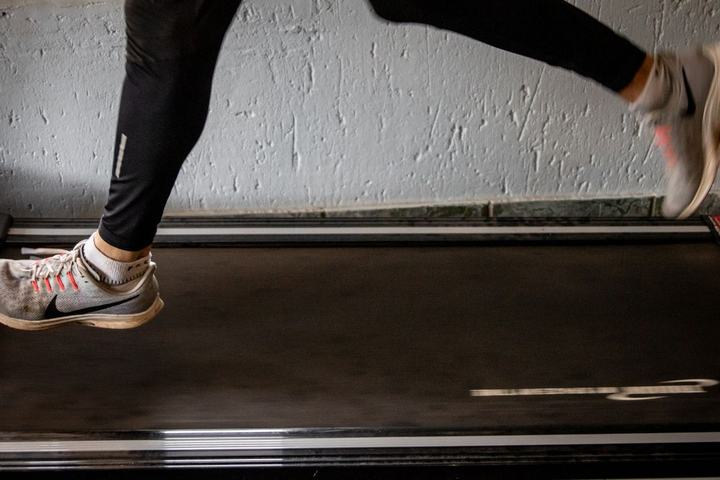
Best Under-Desk Treadmills & Walking Pads (2026)
Four walking pads for standing desks, compared on folding, storage, speed range and noise considerations for calls.
WalkingPad C2, UREVO 2-in-1 Under Desk Treadmill, DeerRun Q1 Mini, Goyouth 2-in-1
Read the guide →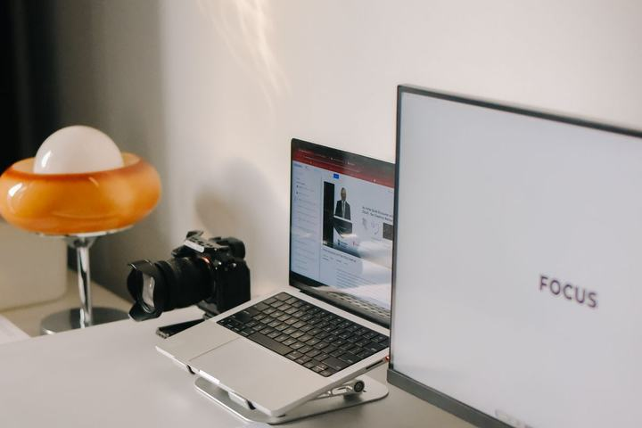
Best 4K Webcams for Video Calls (2026): Low Light & Auto-Framing
Four 4K webcams for professional video calls, compared on sensor size, AI tracking, microphones and mounting.
Insta360 Link 2, OBSBOT Tiny 2, Elgato Facecam Pro, Logitech MX Brio
Read the guide →No guides match that search.
How we make these guides
We're a small independent site. Our guides compare manufacturer specifications, warranty terms and patterns in published reviews and owner feedback, and we say which kind of buyer each product suits. When we earn a commission through an Amazon link it never changes what we recommend. Read our research process.